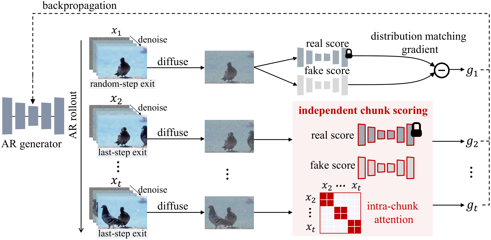

Picture an art teacher grading the next panel of a comic. If they always look at the whole strip, a smudged earlier panel makes them say "keep the smudge, or it won't match." RMD first has the teacher cover the earlier panels and grade each one alone, so the smudge never spreads. Afterwards, a quick pass with the whole strip in view smooths the joins.
만화의 다음 칸을 채점하는 미술 선생님을 떠올려 보자. 늘 만화 전체를 함께 보면, 앞 칸이 번져 있을 때 "어울리려면 번진 것도 따라 그려"라고 말하게 된다. RMD는 먼저 선생님이 앞 칸을 가리고 각 칸만 따로 채점하게 해서 번짐이 퍼지지 않게 한다. 그다음 만화 전체를 보며 한 번 더 손봐 칸 사이 이음새를 다듬는다.
How it works: generate with history, grade without it작동 방식: 과거를 보고 만들고, 과거 없이 채점한다
Only the grading changes; the generator and its sliding window stay as they are. Each chunk gets its own clean target, whatever happened before it.
바뀌는 것은 채점뿐이다. 생성기와 슬라이딩 윈도우는 그대로다. 각 구간은 앞에서 무슨 일이 있었든 자기만의 깨끗한 목표를 받는다.

- Roll out on-policy.자기 생성으로 굴린다.A 1.3B causal Wan student writes an 81-frame video chunk by chunk, 4 denoising steps each, feeding on its own output.1.3B 인과(causal) Wan 학생이 81프레임 영상을 구간마다 4번의 노이즈 제거로 만들며, 자기 출력을 다시 맥락으로 쓴다.
- Grade chunks alone.구간을 따로 채점한다.A LoRA-adapted Wan 14B teacher scores each later chunk at the final step only; the first chunk at a random step.LoRA로 조정한 Wan 14B 교사가 이후 구간은 마지막 단계에서만, 첫 구간은 무작위 단계에서 채점한다.
- Refine jointly.함께 다듬는다.A short, low-learning-rate stage of ordinary video-level DMD fixes jitter between chunks.학습률을 낮춘 짧은 일반 비디오 단위 DMD 단계가 구간 사이의 떨림을 바로잡는다.
Key idea: each piece is needed for a different failure핵심: 각 요소가 서로 다른 실패를 막는다
Chunk-alone grading delivers most of the gain; the joint refinement adds the last bit. Video DMD alone collapses into color artifacts, and grading every chunk at random steps causes jitter.
구간별 따로 채점이 향상의 대부분을 만들고, 함께 다듬는 단계가 마지막 몫을 더한다. 비디오 DMD만 쓰면 색 결함으로 무너지고, 모든 구간을 무작위 단계에서 채점하면 화면이 떨린다.
Results: the gap opens past the training horizon결과: 학습 길이를 넘어서면서 격차가 벌어진다
At one minute, 12× the training length, RMD leads both forcing baselines on every score. The margin is largest on the semantic score, where baselines lose the prompt.
학습 길이의 12배인 1분에서 RMD는 두 forcing 기준선을 모든 점수에서 앞선다. 격차는 의미 점수에서 가장 크다. 기준선은 프롬프트 내용을 잃어 간다.
| Chunk구간 | Method방법 | Total | Quality | Semantic |
|---|---|---|---|---|
| 1 | Self Forcing | 70.94 | 77.89 | 43.17 |
| 1 | Causal Forcing | 69.88 | 78.34 | 36.03 |
| 1 | RMD | 81.26 | 84.52 | 68.24 |
| 3 | Self Forcing | 77.44 | 81.99 | 59.22 |
| 3 | Causal Forcing | 74.88 | 80.53 | 52.27 |
| 3 | RMD | 81.48 | 85.03 | 67.24 |
When a student learns from its own rollouts, a teacher that sees the student's flawed context can end up endorsing the flaws. Splitting "is this piece good?" from "does it fit?" is a cheap fix worth trying in any on-policy distillation.학생이 자기 생성물로 배울 때, 학생의 결함 있는 맥락을 보는 교사는 그 결함을 승인해 버릴 수 있다. "이 조각이 좋은가?"와 "앞뒤와 맞는가?"를 나눠 채점하는 것은 어떤 온폴리시 증류에서도 시도해 볼 만한 값싼 처방이다.
The only baselines are Self Forcing and Causal Forcing; long-video methods such as LongLive, Rolling Sink and Context-Matched Distillation are discussed but not compared. The 500-second result is a single qualitative example, and there are no seeds or user studies.기준선은 Self Forcing과 Causal Forcing뿐이다. LongLive, Rolling Sink, Context-Matched Distillation 같은 긴 영상 방법은 언급만 하고 비교하지 않는다. 500초 결과는 정성적 예시 하나뿐이고, 시드 반복이나 사용자 평가도 없다.